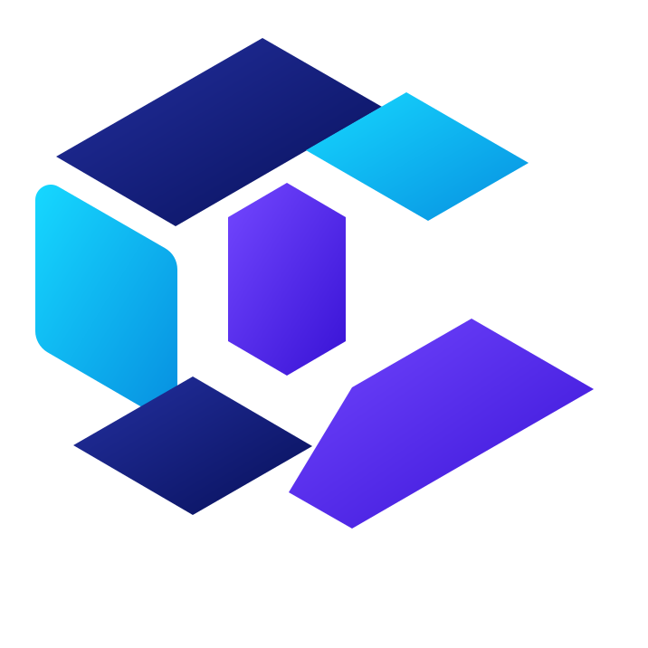

为专注工作而生的 Git 客户端
让复杂的 Git，
变得清晰而从容。
约 20MB 的轻量体积，装下提交图谱、精细暂存、三方合并与 AI 协作。快到无感，强到够用。

GITBX
· gitbx/main
Commit GraphAll branches⌕⋯
feat: add multilingual landing pagechenarmy · just now
a91fc20fix: improve branch checkout safetychenarmy · 2h ago
72bc8darefactor: unify Git service layerchenarmy · yesterday
3e7a0f1feat: AI-assisted merge resolutionchenarmy · 2 days ago
c630db2
Changes4
VWebsiteHero.vueM
TSi18n.tsM
#landing.cssA
WebsiteHero.vueUnified Split
18- <h1>Git client</h1>18+ <h1>Git, made clear.</h1>19+ <p>Fast. Focused. Yours.</p>20 <DownloadButton />
⑂ main✓ Git Engine OnlineUTF-8Ln 18, Col 24
~20 MB轻量安装包
60 FPS流畅提交图谱
3-Way可视化冲突合并
8内置界面语言
核心能力你每天需要的，
每一样都恰到好处。
从查看历史到解决冲突，GITBX 把高频 Git 工作流放进一个快速、克制且可信赖的界面。
⌁提交历史，一眼看清
Canvas 虚拟拓扑图在大型仓库中依然流畅。分支、标签与提交关系清晰呈现，定位上下文不再费力。
feat: release v0.1.20main · 2 minutes ago fix: safer terminal launchfeature/safe-terminal merge: bring release fixesmain · yesterday 改哪行，就提交哪行
Hunk 与行级暂存让每次提交都保持干净、专注、可审阅。
+ add responsive navigation+ support RTL layout− remove legacy fallback
⌘冲突解决，不再心慌
三方合并编辑器并排展示来源、目标与结果，配合 AI 建议更快做出正确选择。
OURSKeep
RESULT✓
THEIRSAccept
✦AI 懂代码，也懂你的变更
生成准确的提交信息、分析冲突、探测敏感凭据。通过原生 MCP Server，让 Coding Agent 直接参与 Git 协作。
4 files changedGenerate commit message
✦feat(i18n): add multilingual website
Add eight locales with automatic RTL support.
一个完整的工作流从第一行改动，到最后一次推送。
不用在窗口和命令之间来回切换，保持上下文，专注完成工作。
01⌁
看见上下文
浏览提交图谱与分支关系
02±
组织变更
按文件、Hunk 或行精细暂存
03✦
放心提交
AI 生成信息并检查敏感内容
04↗
安全同步
Fetch、Pull 与 Push 尽在掌控
准备好，用更轻的方式驾驭 Git？
免费、开源、跨平台。现在就开始。